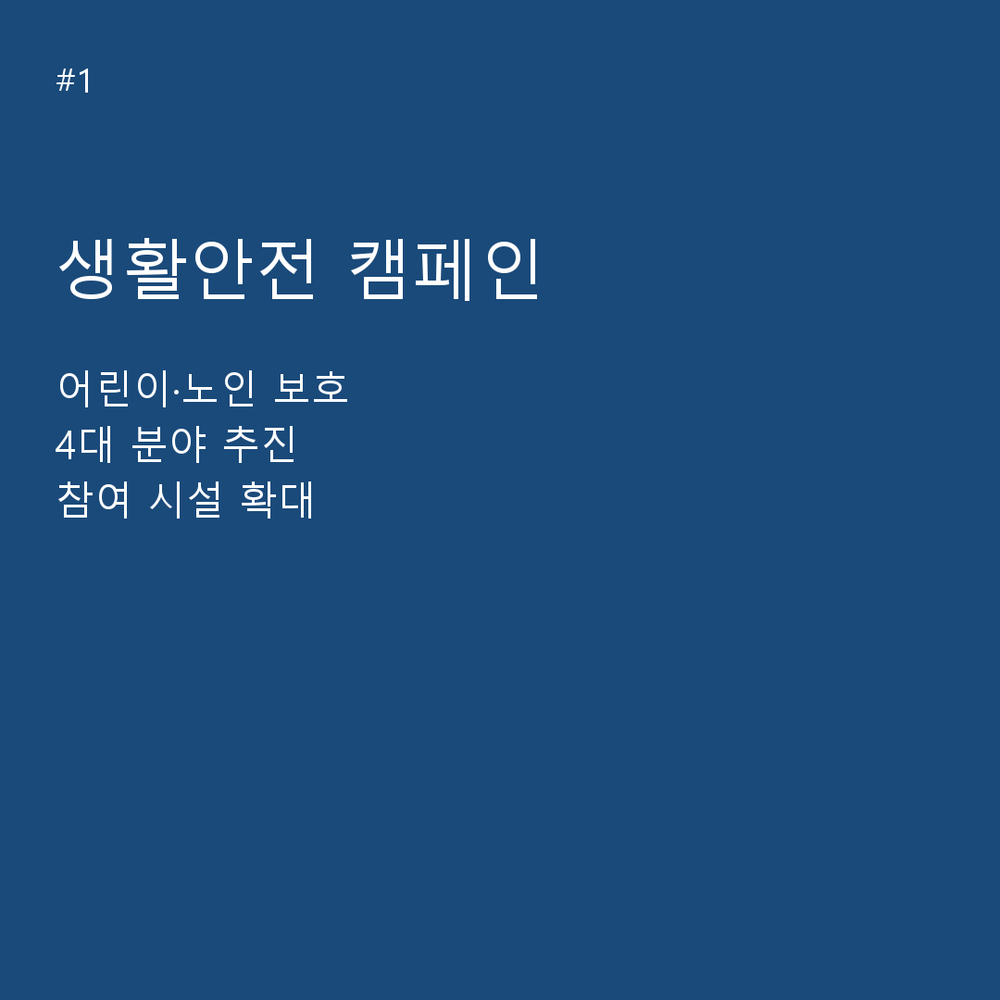
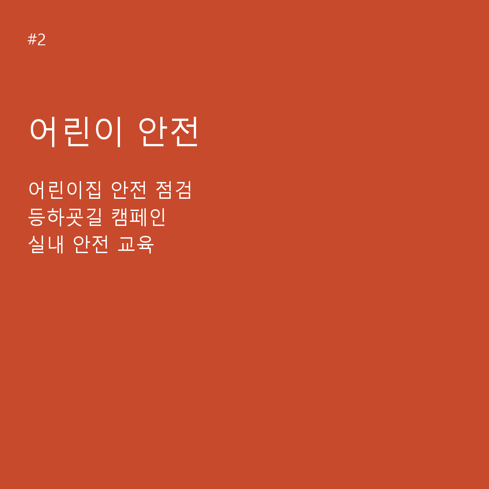
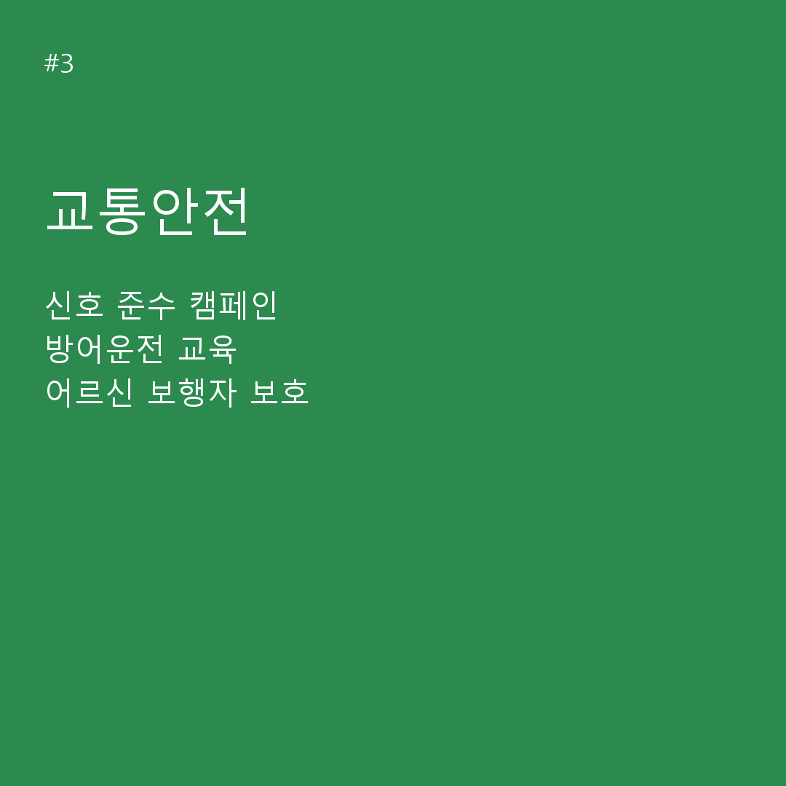
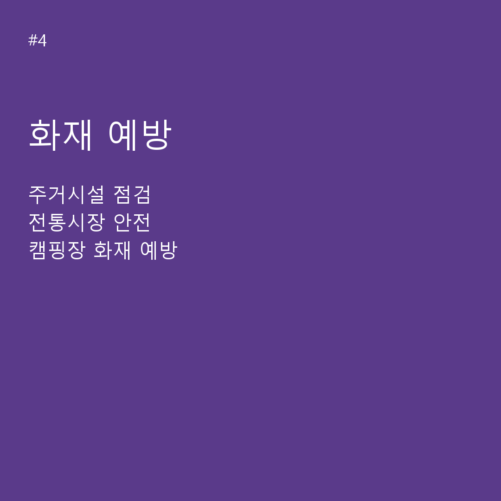

주요 소식 & 매뉴얼
카드뉴스로 보는 안내서비스
시민 여러분이 자주 찾는 주요 행정 및 복지 서비스 핵심 안내 카드뉴스입니다.

NEWS 01
정부 안내서비스 핵심 매뉴얼

NEWS 02
복지·급여 맞춤형 지원 안내

NEWS 03
비대면 온라인 민원 신청 가이드

NEWS 04
분야별 주요 문의기관 및 콜센터
서비스 탐색 및 필터
결과 0건
빠른 선택:
카테고리별 현황
분야별 안내서비스 카드
각 카테고리별 총 서비스 건수와 최다 연계된 대표 문의기관 정보입니다.
서비스 상세 목록
안내서비스 상세 내역 (0건)
| 서비스ID | 서비스명 | 카테고리 | 소관기관 | 문의기관 | 콜센터 | 온라인안내 | 바로연결 |
|---|